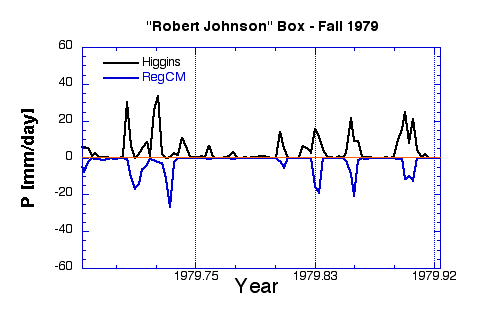
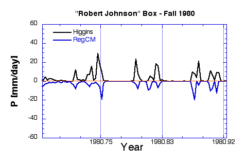
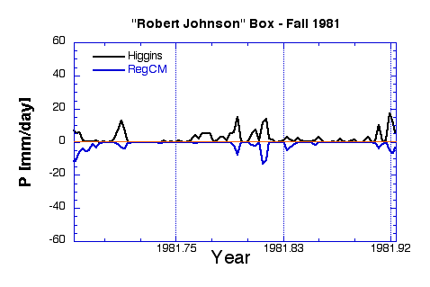
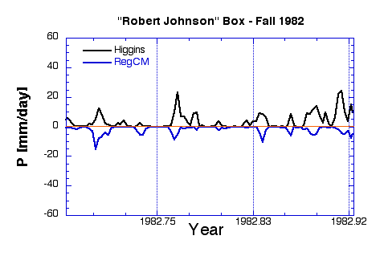
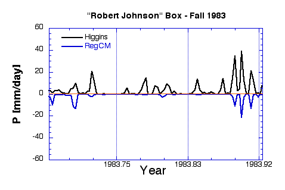
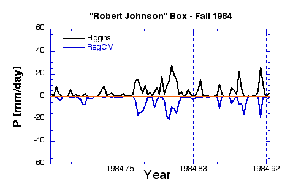
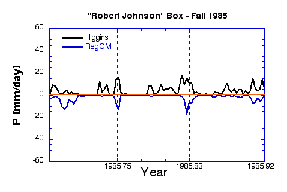
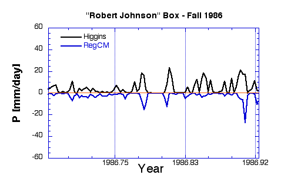
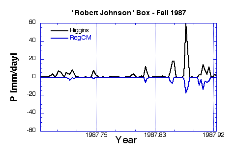
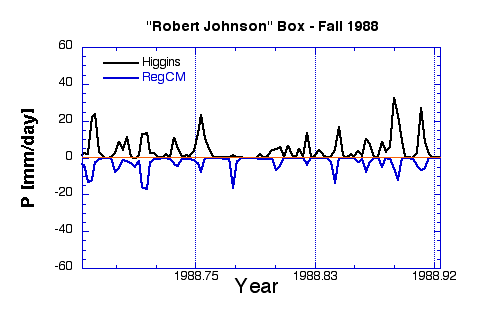

The "Robert Johnson" box covers approximately the Mississippi River
Delta region. Its boundaries are (31-35 N, 85-90 W).
Daily precipitation averaged over the Robert Johnson box from the Higgins observational data and from the 10-year RegCM2 simulation driven by NCEP reanalyses.
The figures below are September-October-November time series for each of the years. Vertical lines separate the three months. RegCM2 precipitation has been multiplied by (-1) to help distinguish the two time series.
Perfect reproduction of the Higgins observations would result in two curves that are mirror images of each other. The overall impression is that RegCM is doing a fairly good job at reproducing the frequency of precipitation events, but that it generally produces too little precipitation for most events. Fall 1983 might be an especially good period to examine causes for the rainfall deficiency in the RegCM simulation.









